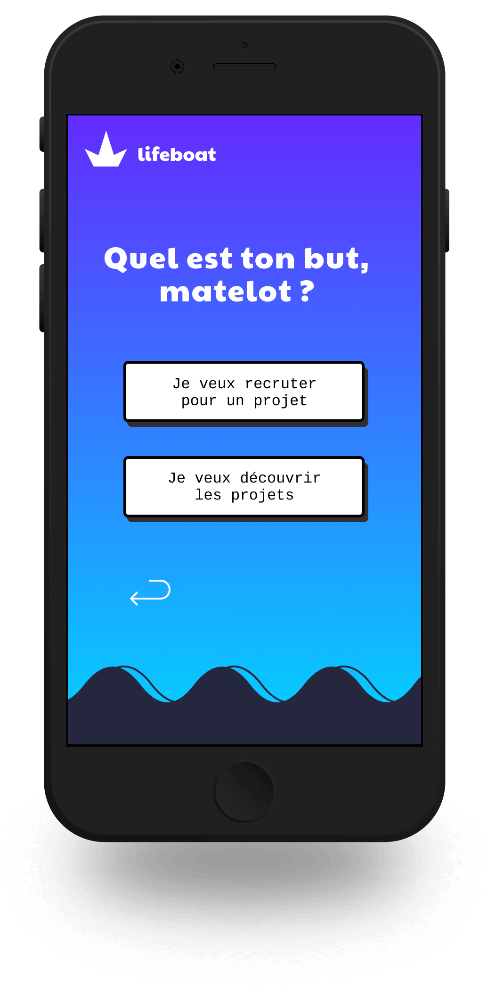
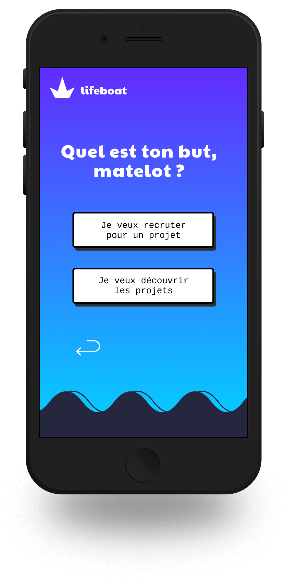

Case study de Lifeboat
Début mai, commencement du Travail de Fin d'Année
Deux mois. C’est la durée pendant laquelle ce TFA va se dérouler.
Il s’agit de développer un service qui réponde à une problématique réelle et clairement identifiée. On va donc être amené à faire grandir un projet du début, jusqu’à sa forme la plus évoluée. À la toute fin, on s'apercevra que le projet ne ressemble plus vraiment à ce qu'il était censé être au départ.
 

Développer un service ?
Selon mes croyances, les gens ont du mal à trouver des personnes avec qui travailler. En effet :
Un million d’idées naissent dans l’esprit humain à chaque instant, mais nombre d’entre elles sont rarement, voire jamais concrétisées.
Il existe de multiples raisons à cela, comme le temps ou l’argent. Et si c'était parce qu'on ne trouve personne pour leur donner vie ?
Confirmer une hypothèse
Je pars donc à la rencontre de mon public, c'est-à-dire les personnes travaillant dans le milieu du digital, plus particulièrement le web.

Ces réponses sont très intéressantes car elles me permettent de valider l’hypothèse qu’un travail sans coéquipiers mène souvent à une perte de motivation, un abandon, voire à l’avortement du projet. La majorité des réponses me fait aussi comprendre qu’il peut être difficile de trouver une ou plusieurs personnes avec qui travailler.
Je tenais la suite de mon TFA !
Minimum Viable Product
Je vais créer une application qui permettra de trouver des personnes avec qui travailler sur un projet commun.
Et pour savoir si une telle application pourrait avoir de l’intérêt auprès de mon public, je commence par fabriquer ce qu’on appelle un MVP, Minimum Viable Product. Autrement dit, un premier jet de ce à quoi ressemblera mon application, mais dans son aspect le plus brut.
Pendant la construction de mon MVP, je le fais tester pour connaître les éventuelles failles.